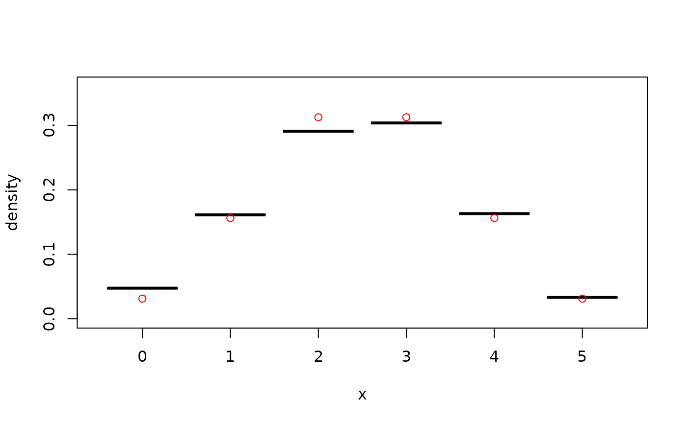

The estimators can handle data with bounded, unbounded, and discrete support, see Details.
kde1d( x, xmin = NaN, xmax = NaN, mult = 1, bw = NA, deg = 2, weights = numeric(0) )
Arguments
| x | vector (or one-column matrix/data frame) of observations; can be
|
|---|---|
| xmin | lower bound for the support of the density (only for continuous
data); |
| xmax | upper bound for the support of the density (only for continuous
data); |
| mult | positive bandwidth multiplier; the actual bandwidth used is \(bw*mult\). |
| bw | bandwidth parameter; has to be a positive number or |
| deg | degree of the polynomial; either |
| weights | optional vector of weights for individual observations. |
Value
An object of class kde1d.
Details
A gaussian kernel is used in all cases. If xmin or xmax are
finite, the density estimate will be 0 outside of \([xmin, xmax]\). A
log-transform is used if there is only one boundary (see, Geenens and Wang,
2018); a probit transform is used if there are two (see, Geenens, 2014).
Discrete variables are handled via jittering (see, Nagler, 2018a, 2018b).
A specific form of deterministic jittering is used, see equi_jitter().
References
Geenens, G. (2014). Probit transformation for kernel density estimation on the unit interval. Journal of the American Statistical Association, 109:505, 346-358, arXiv:1303.4121
Geenens, G., Wang, C. (2018). Local-likelihood transformation kernel density estimation for positive random variables. Journal of Computational and Graphical Statistics, to appear, arXiv:1602.04862
Nagler, T. (2018a). A generic approach to nonparametric function estimation with mixed data. Statistics & Probability Letters, 137:326–330, arXiv:1704.07457
Nagler, T. (2018b). Asymptotic analysis of the jittering kernel density estimator. Mathematical Methods of Statistics, in press, arXiv:1705.05431
Sheather, S. J. and Jones, M. C. (1991). A reliable data-based bandwidth selection method for kernel density estimation. Journal of the Royal Statistical Society, Series B, 53, 683–690.
See also
Examples
## unbounded data x <- rnorm(500) # simulate data fit <- kde1d(x) # estimate density dkde1d(0, fit) # evaluate density estimate summary(fit) # information about the estimate#> kernel density estimate ('kde1d'), log-quadratic #> ----------------------------------------------------------------- #> nobs = 500, bw = 0.71, loglik = -712.05, d.f. = 4.65## bounded data, log-linear x <- rgamma(500, shape = 1) # simulate data fit <- kde1d(x, xmin = 0, deg = 1) # estimate density dkde1d(seq(0, 5, by = 1), fit) # evaluate density estimate summary(fit) # information about the estimate#> kernel density estimate ('kde1d'), log-linear with bounded support (xmin = 0) #> ----------------------------------------------------------------- #> nobs = 500, bw = 0.3, loglik = -449.06, d.f. = 12.9## discrete data x <- rbinom(500, size = 5, prob = 0.5) # simulate data x <- ordered(x, levels = 0:5) # declare as ordered fit <- kde1d(x) # estimate density dkde1d(sort(unique(x)), fit) # evaluate density estimate summary(fit) # information about the estimate#> (jittered) kernel density estimate ('kde1d'), log-quadratic #> ----------------------------------------------------------------- #> nobs = 500, bw = 1.12, loglik = -789.98, d.f. = 10.08## weighted estimate x <- rnorm(100) # simulate data weights <- rexp(100) # weights as in Bayesian bootstrap fit <- kde1d(x, weights = weights) # weighted fit plot(fit) # compare with unweighted fit